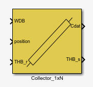
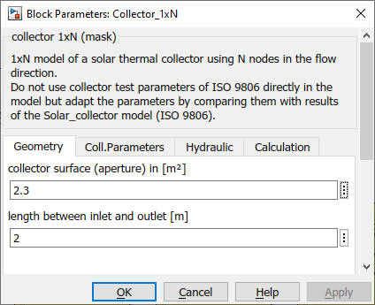
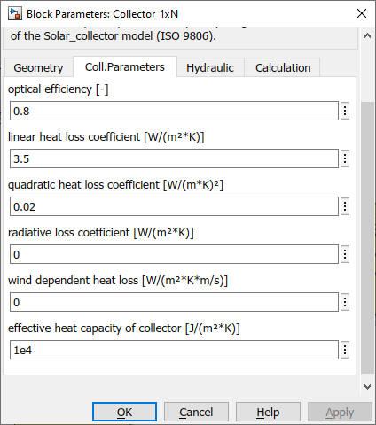
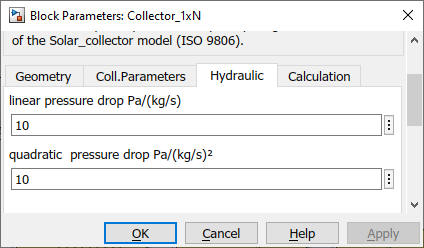
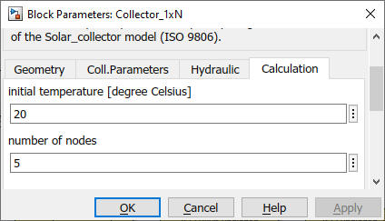

Collector
1xN
Path: CARNOT/Source/Solar_Thermal
Purpose
Collector model, that calculates the THB output.
Description
The collector model is a one-dimensional multinode model for thermal
collectors. The model is based on parameters obtained from measurement, i.e.
collector-test results. The collector is divided in "Node" nodes. The
flow is equally distributed among the risers.
As the 1xN approach is a better fit to the real temperature increas along the flow in a collector, the model is suitable for low flow systems and systems with a varying (low) massflow like thermosyphon systems.
The energy balance for every node is a differential equation, that is calculated in the S-function unicol.
ccoll * dT/dt = qsolar + mdot*c/A * (Tin - T)
+ U1*(Tamb - T) - U2*(Tamb - T)2
+ Uwind*vwind*(Tamb - T) + Usky*(Tsky - T)
|
Symbol |
used for |
unit |
|
A |
surface of collector node |
[m2] |
|
c |
heat capacity of fluid |
[J/(kg*K)] |
|
ccoll |
heat capacity of collector per surface |
[J/(m2*K)] |
|
mdot |
mass flow rate |
[kg/s] |
|
qsolar |
power input per surface area from sun |
[W/m2] |
|
Tamb |
ambient temperature |
[K] |
|
Tsky |
sky temperature |
[K] |
|
t |
Time |
[s] |
|
U1 |
linear heat loss coefficient |
[W/(m2*K)] |
|
U2 |
Quadratic heat loss coefficient |
[W/(m*K)2] |
|
Uskx |
radiative heat loss to sky |
[W/(m2*K)] |
|
Uwind |
wind speed dependant heat losses |
[W/((m/s)*m2*K)] |
|
vwind |
wind speed |
[m/s] |
The collector calculates friction losses in the
massflow. This may be specified in the subsystem
Pressure_Drop_Collector of the collector.
Static pressure is calculated if necessary, i.e. for thermosyphon systems.
See chapter 2.4.1 Pressure Drop
and Massflow Calculations
of the manual
2_Basic_Concepts.
Inputs:
Outputs:
Parameters and Dialog Box




Characteristics
Direct Feedthrough Yes
Sample
time
Inherited
from driving block
Vectorized
No
Validation